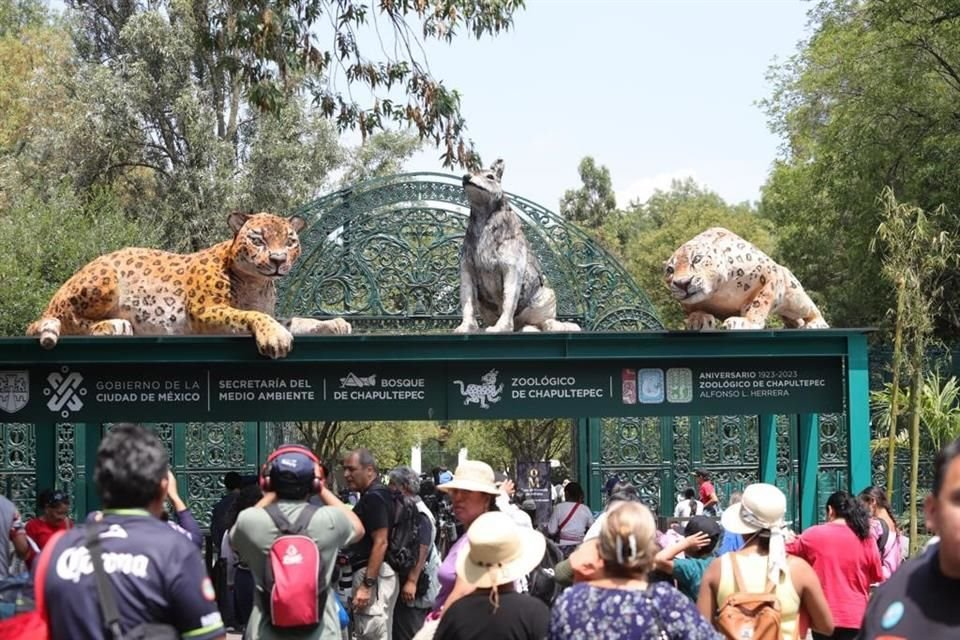
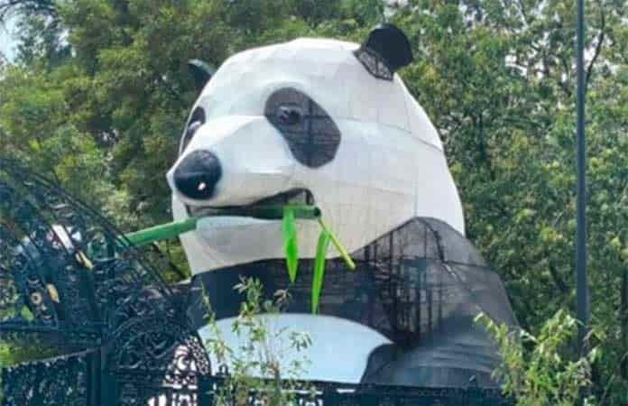
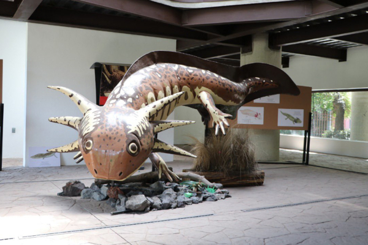

El zoológico ocupa 17 hectáreas en la primera sección del Bosque de Chapultepec. Cuenta con siete áreas con condiciones climáticas y vegetales especiales: desierto, pastizales, franja costera, tundra, aviario, bosque templado y bosque tropical. Ademàs cuenta con espacios especializados como el herpertario, el mariposario y el centro de anfibios, que albergan reptiles, insectos y anfibios incluyendo el ajolote

Para construir el zoològico de Chapultepec se inspiraron en el antiguo zoologico de Roma.El zoològico de Chapultepec ya tiene màs de 100 años; pues due fundado en 1923.

El animal preferido de todos los visitantes es el panda gigante, y en este zoològico contamos con la panda Xin Xin que significa esperanza en chino. Ademàs es el unico panda en cautiverio en toda America Latina

Ademàs de estar en el billete de cincuenta pesos mexicanos los ajolotes se han convertido en uno de los favoritos de chicos y grandes, es por eso que en el zoologico contamos con un espacio para que puedas admirarlos ya que estan en peligro de extincion
El biólogo Juan Carlos Sánchez Olmos, director del Zoológico de Chapultepec, recordó que hace 96 años el defensor de la naturaleza, Alfonso L. Herrera, colocó la primera piedra de este lugar. El Zoológico de Chapultepec es considerado el segundo lugar de mayor afluencia en la capital; en promedio acuden 275 mil 369 visitantes al mes, y en los últimos seis años lo han visitado 23 millones 131 mil 02 personas. A través del Programa Institucional de Conservación por Especies (PICE), la Dirección General de Zoológicos y Conservación de la Fauna Silvestre colabora en la recuperación de especies de fauna silvestre consideradas prioritarias por su delicado estado de conservación. En el programa de conservación del lobo mexicano, quien a sus 24 años de servicio en este sitio recalca la importancia de los planes para la recuperación de los seres vivos que habitan el espacio. Aquí podras ver alguna de las atracciones: